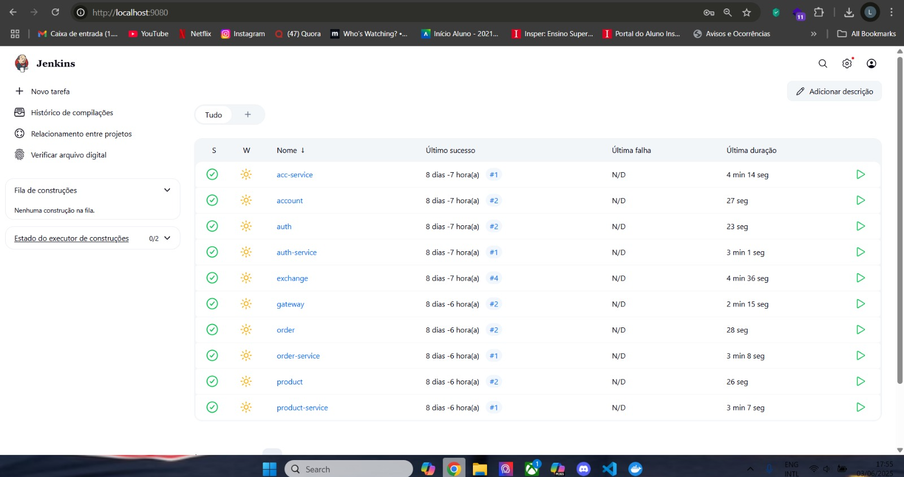

Automa√ß√£o de Deploy com Jenkins¶
Overview¶
Este módulo aborda a criação de uma pipeline de automação utilizando Jenkins para realizar o build, empacotamento, publicação e deploy contínuos dos microserviços em um cluster Kubernetes.
A ideia é garantir um fluxo padronizado e confiável de CI/CD para toda a plataforma.
üß± Estrutura do Projeto¶
Cada microserviço possui um Jenkinsfile específico no seu diretório raiz. Além disso, um pipeline principal pode ser utilizado para orquestrar múltiplos serviços em sequência:
.
├── account-service/
│ └── Jenkinsfile
├── auth-service/
│ └── Jenkinsfile
├── gateway-service/
│ └── Jenkinsfile
├── product-service/
│ └── Jenkinsfile
├── order-service/
│ └── Jenkinsfile
üîÅ Etapas do Pipeline¶
Cada Jenkinsfile deve implementar uma sequência clara de etapas:
- Clonagem do Repositório – Garante acesso ao código atualizado.
- Instalação de Dependências – Prepara o ambiente da aplicação.
- Build do Serviço – Compila e empacota o microserviço.
- Build & Push da Imagem – Constrói a imagem Docker e envia para o Docker Hub.
- Deploy no Cluster – Atualiza o serviço no Kubernetes com a nova imagem.
üìÑ Exemplo de Jenkinsfile (product-service)¶
pipeline {
agent any
environment {
SERVICE = 'product'
NAME = "lucafeltrin14/${env.SERVICE}"
}
stages {
stage('Dependencies') {
steps {
build job: 'product', wait: true
}
}
stage('Build') {
steps {
sh 'mvn -B -DskipTests clean package'
}
}
stage('Build & Push Image') {
steps {
withCredentials([usernamePassword(
credentialsId: 'dockerhub-credential',
usernameVariable: 'USERNAME',
passwordVariable: 'TOKEN'
)]) {
sh 'docker login -u $USERNAME -p $TOKEN'
sh "docker buildx create --use --platform=linux/arm64,linux/amd64 --node multi-platform-builder-${env.SERVICE} --name multi-platform-builder-${env.SERVICE}"
sh "docker buildx build --platform=linux/arm64,linux/amd64 --push --tag ${env.NAME}:latest --tag ${env.NAME}:${env.BUILD_ID} -f Dockerfile ."
sh "docker buildx rm --force multi-platform-builder-${env.SERVICE}"
}
}
}
}
}
üß© Requisitos¶
Para que a automação funcione corretamente, certifique-se de que o ambiente Jenkins esteja configurado com:
- Plugins para Docker, Git e Kubernetes.
- Acesso ao cluster Kubernetes (via
kubeconfig). - Credenciais do Docker Hub cadastradas (
dockerhub-credential). - Scripts
Dockerfileek8s.yamlversionados no repositório.
üåê Deploy Integrado¶
Todos os serviços devem ser implantados no mesmo cluster Kubernetes. O deploy pode ser feito diretamente via comandos kubectl ou com integração via scripts dentro do Jenkinsfile.
Recomenda-se o uso de
docker buildxpara suportar múltiplas arquiteturas (arm64, amd64).
üí° Dicas & Expans√µes¶
- Use
build job: 'service'para compor pipelines maiores e reutilizar etapas entre microserviços. -
Pode-se estender o pipeline com:
-
Testes automatizados (JUnit, Pytest, etc.)
- Análise estática de código (SonarQube, ESLint, etc.)
- Lint e validação de manifests YAML
- Notificações via Slack ou Discord
- A tag
:lateste:${BUILD_ID}ajuda no rastreamento de versões por imagem.
üñº Exemplo Visual¶
Pipelines dos microserviços podem ser visualizados no Jenkins:
